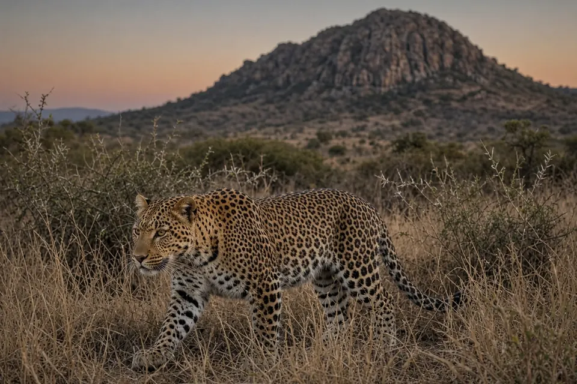

Home › Blog › Can leopards live near people?
Can leopards live near people? What field studies of leopards in India's farmland and cities show
Yes. In western India, leopards live at high density in farmland with more than 300 people per km² and almost no wild hoofed prey. They feed mostly on domestic animals, especially dogs, pass within a few metres of houses at night and stay out of sight by day. In that study area, attacks on people were rare. Coexistence is fragile, though: when leopards were trapped and moved away to reduce conflict, attacks on people went up, not down.
The short answer
- Leopards persist in farmland: a camera trap study in western Maharashtra found about 4.8 adult leopards per 100 km² in cropland with no wilderness.
- They live off domestic animals: 87% of prey biomass in leopard scats from the same region came from domestic animals, and 39% from dogs alone.
- They move by night: GPS collared leopards in villages came close to houses at night but almost never by day.
- Moving them made things worse: a large translocation programme in Junnar was followed by a rise in attacks on people from about 4 to about 17 a year.
For the basics on size, range and status, see our leopard facts page.
Leopards in a landscape with no wilderness
Protected areas cover only about 5% of India's land, so wide ranging carnivores must also use farmland. In a 2013 study in PLoS ONE, Vidya Athreya and colleagues used camera traps and capture recapture analysis to estimate carnivore density in an agricultural landscape of western Maharashtra with more than 300 people per km². The area was cropland, devoid of wilderness and of wild herbivore prey.
Leopards occurred at about 4.8 adults per 100 km² and striped hyaenas at about 5.0 per 100 km². The authors write that roughly 10 large carnivores per 100 km² sharing space with dense human populations in a completely modified landscape had never been reported before. Human attacks by leopards were rare in the study area, even though leopards had been involved in serious conflict, including human deaths, in adjoining areas.

What leopards eat in farmland
Without deer or antelope, what keeps these leopards alive? A follow up study in Oryx (Athreya et al. 2016) analysed 85 confirmed leopard scats from the croplands of Ahmednagar district. Domestic animals made up 87% of the prey biomass, and domestic dogs alone made up 39%. The only wild prey found were rodents, small Indian civet, bonnet macaque and other primates, mongooses and birds.
Interviews in 77 randomly chosen households showed how much domestic prey was available: about 169 adult cattle, 54 calves, 174 goats, 24 dogs and 61 cats per km². Relative to those numbers, dogs and cats were over represented in the diet compared with the more numerous goats and cattle. The researchers calculated that the standing biomass of dogs and cats alone was enough to sustain the high density of carnivores in the area. For leopard diet in wilder places, see why leopards drag kills into trees.
How leopards move among villages
In 2014, Morten Odden and colleagues fitted GPS collars to five leopards in Maharashtra (four) and Himachal Pradesh (one). Three were released close to where they were caught. These used small home ranges of about 8 km² (a young male), 11 km² and 15 km² (two females). The authors suggest such small ranges mean food from human sources was plentiful, even with wild prey absent.
- Movement was markedly nocturnal: hourly steps averaged about 339 m at night against about 60 m by day.
- Night locations were significantly closer to settlements than day locations.
- Leopards in areas with many people visited houses regularly at night, with 20% of locations within 25 m of a house, but this happened in under 1% of daytime locations.
- One leopard in a sparsely populated area avoided settlements both day and night.
The other two leopards had been moved 52 km before release. They travelled far and in a set direction (the male covered 89 km in a straight line in 37 days) before settling in much larger ranges of about 42 and 65 km². Tigers in Nepal show a similar shift towards the night where people are busy by day; see are tigers nocturnal?
Why moving "problem" leopards backfired
A common response to leopards near villages is to trap them and release them in a forest. Athreya and colleagues tested that idea in Conservation Biology (2011). In the year from February 2001, 29 leopards were captured in the rural Junnar region of Maharashtra (4,275 km², about 185 people per km²), where attacks on livestock were common and attacks on people rare. They were released an average of 39.5 km away in nearby forests, and 11 more leopards were brought into the same forests from other districts.
From 1993 to 2001, Junnar averaged about four leopard attacks on people a year. After the translocations began, the average rose to 17. Attacks increased after nearby releases, became more lethal as more leopards came in from other districts, and were most likely where the most outside leopards had been released. The authors conclude the leopards did not stay put and that translocation induced attacks. Suggested reasons include capture stress, travel through unfamiliar land and loss of fear of people in captivity.
Leopards in a megacity
Leopards also live on the edges of Mumbai, one of the world's largest cities. In a 2018 paper in Frontiers in Ecology and the Environment, Alexander Braczkowski and colleagues argued that by preying on stray dogs, these leopards may reduce dog bites, the risk of rabies and the cost of dog sterilisation. Under one set of assumptions they estimated that leopard presence could save up to 90 human lives a year. That is a modelled estimate, not a count, and the authors stress that living with carnivores involves real trade offs between safety and conservation.
Adaptable does not mean safe from extinction
It is tempting to conclude that a cat this adaptable is not at risk. A 2016 range wide review in PeerJ by Andrew Jacobson and colleagues, calls that a misconception. Leopards now occupy only 25 to 37% of their historic range since 1750, and only about 17% of the remaining range is protected. Three subspecies, the Amur, Arabian and North Chinese leopards, have each lost as much as 98% of their historic range. For the full threat picture, see how many big cats are left? and big cat conservation.
What these studies do not show
Most of this evidence comes from a few landscapes in India, where cultural tolerance of wildlife is often high. It does not mean leopards are harmless: they kill livestock and pets, and attacks on people do happen. The GPS study tracked only five animals. The lesson is narrower and more useful: leopards can share land with people, and how people respond to them strongly shapes how safe that sharing is.
Key takeaways
- Leopards can live at high density in Indian farmland with no wild hoofed prey.
- There they eat mainly domestic animals, especially dogs.
- They approach homes at night and avoid people by day.
- Trapping and moving leopards was followed by more attacks on people, not fewer.
Frequently asked questions
Can leopards live near people?
Yes. In western Maharashtra, India, leopards lived at about 4.8 adults per 100 km² in farmland with more than 300 people per km², and attacks on people there were rare (Athreya et al. 2013).
What do leopards eat near villages?
Mostly domestic animals. In Ahmednagar district, 87% of prey biomass in leopard scats was domestic animals and 39% was dogs alone (Athreya et al. 2016).
Does moving leopards away stop attacks?
In Junnar, Maharashtra, it did the opposite. After 29 leopards were captured and released elsewhere, attacks on people rose from about four to 17 a year (Athreya et al. 2011).
Are there leopards in Mumbai?
Yes. Leopards live on the edges of Mumbai, and one study estimated that by eating stray dogs they may reduce dog bites and rabies risk (Braczkowski et al. 2018).
If leopards are so adaptable, why are they Vulnerable?
Because they have still lost most of their range. Leopards occupy only 25 to 37% of their historic range, and some subspecies have lost as much as 98% (Jacobson et al. 2016).
Cite this page
APA: BigCatWise. (2026, October 19). Can leopards live near people?. Joshua Israel Ventures LLC. https://bigcatwise.com/blog/can-leopards-live-near-people.html
MLA: "Can leopards live near people?." BigCatWise, Joshua Israel Ventures LLC, 19 Oct. 2026, bigcatwise.com/blog/can-leopards-live-near-people.html.
Chicago: BigCatWise. "Can leopards live near people?." Joshua Israel Ventures LLC. Last modified October 19, 2026. https://bigcatwise.com/blog/can-leopards-live-near-people.html.
Please check the date you accessed the page and adjust to your teacher's or journal's style guide.
Sources
- Athreya, Odden, Linnell, Krishnaswamy and Karanth (2013) Big cats in our backyards: persistence of large carnivores in a human dominated landscape in India, PLoS ONE 8(3): e57872. DOI 10.1371/journal.pone.0057872
- Athreya, Odden, Linnell, Krishnaswamy and Karanth (2016) A cat among the dogs: leopard Panthera pardus diet in a human-dominated landscape in western Maharashtra, India, Oryx 50(1): 156-162. DOI 10.1017/S0030605314000106
- Odden, Athreya, Rattan and Linnell (2014) Adaptable neighbours: movement patterns of GPS-collared leopards in human dominated landscapes in India, PLoS ONE 9(11): e112044. DOI 10.1371/journal.pone.0112044
- Athreya, Odden, Linnell and Karanth (2011) Translocation as a tool for mitigating conflict with leopards in human-dominated landscapes of India, Conservation Biology 25(1): 133-141. DOI 10.1111/j.1523-1739.2010.01599.x
- Braczkowski, O'Bryan, Stringer, Watson, Possingham and Beyer (2018) Leopards provide public health benefits in Mumbai, India, Frontiers in Ecology and the Environment 16(3): 176-182. DOI 10.1002/fee.1776
- Jacobson et al. (2016) Leopard (Panthera pardus) status, distribution, and the research efforts across its range, PeerJ 4: e1974. DOI 10.7717/peerj.1974
- IUCN SSC Cat Specialist Group: Leopard
Figures are rounded summaries of the sources above. Wild populations are hard to count, so estimates change as new surveys are published.